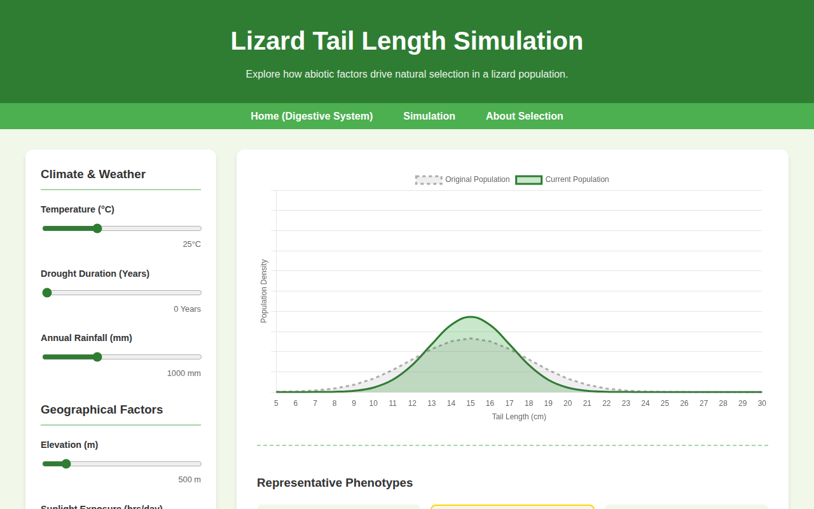
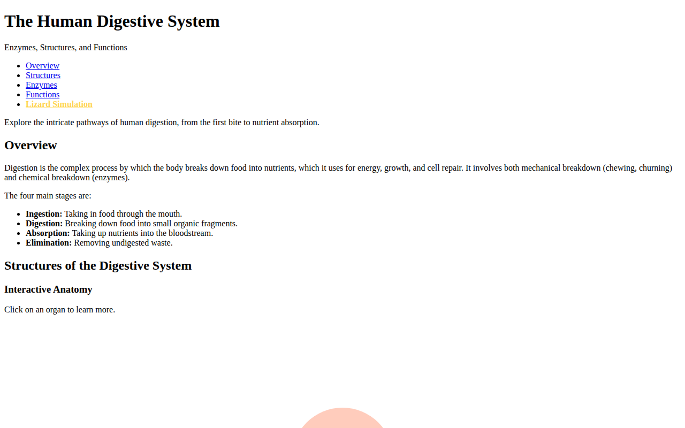
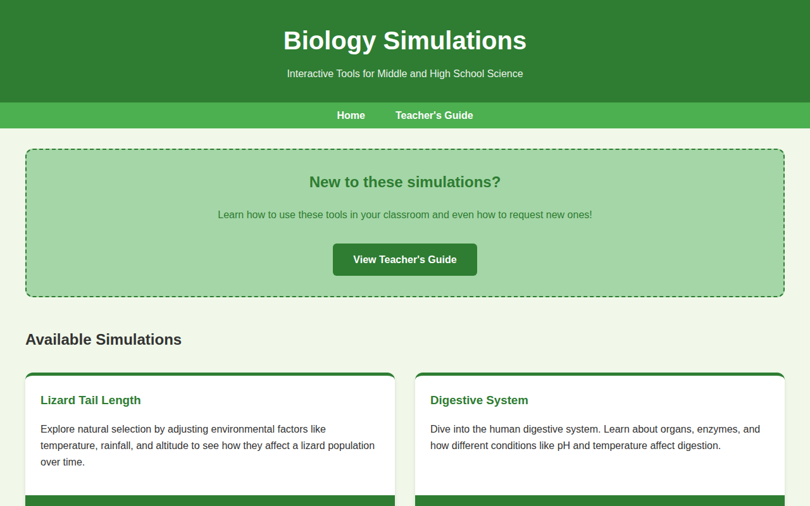

Welcome! This guide is designed to help you work with me (Jules, your AI assistant) to create interactive biology simulations for your classroom. We will walk through the process of building a simulation, saving it to GitHub, and making it live on the internet for your students.
Part 1: How to Build a New Simulation with Jules
Building a simulation is a collaborative process. Think of me as your personal software engineer. Here is how we can work together using your MS-LS1-1 (Cells) topic as an example.
Step 1: Tell me what you want to achieve
Start by giving me the learning goal. For example:
"Jules, I want to build a simulation for MS-LS1-1. Students should be able to look at different samples (like a rock, a leaf, and pond water) under a virtual microscope to see which ones are made of cells."
Step 2: Refine the details
I will ask you questions to make sure I understand. We might discuss:
- Visuals: Should the "cells" look like plant cells (with walls) or animal cells?
- Interactions: Do students click a button to "zoom in"?
- Data: Should there be a checklist for students to mark "Living" or "Non-living"?
Step 3: I build the "Draft"
I will write the code (HTML for the structure, CSS for the look, and JavaScript for the "brain" of the simulation). I will tell you when I've added new files to your project.

An example of a finished simulation: Lizard Tail Length.
Step 4: Review and Edit
I can show you what it looks like. If you want to change a color or add a new sample (like "Butterfly Wing"), just ask!

Another example: The Human Digestive System.
Part 2: Saving Your Work (The "Transfer")
When we are happy with the simulation, I need to "transfer" the code from my workspace to your GitHub repository.
- The "Commit": Think of this as a "Save Point" in a video game. I will bundle up all our changes and give them a name, like "Add new Cell Microscope simulation".
- The "Push": This is the actual transfer. I "push" the save point up to GitHub's servers so it is safely stored in your account.
What you need to do: Usually, I handle this part! When I say "I am submitting my changes," it means I am performing these steps for you.
Part 3: Making it Live (The "Activation")
Once the code is on GitHub, we need to "activate" it so it becomes a real website your students can visit. This uses a feature called GitHub Pages.
Follow these steps on the GitHub website:
1. Go to "Settings"
At the top of your repository page on GitHub.com, click the Settings gear icon.
Look for the "Settings" tab at the top-right of your repository page.
2. Find the "Pages" section
On the left-hand sidebar, look for a menu item called Pages (it usually has a small document icon).
On the left sidebar, find "Pages" under the "Code and automation" section.
3. Build and Deployment
In the center of the screen, look for the Branch section.
- Click the dropdown that says None and select main.
- Click the Save button.
Choose the "main" branch and click Save to start the process.
4. Wait for the Link
After a minute or two, refresh the page. You will see a bar at the top that says:
"Your site is live at..."
Followed by a web link (URL). This is the link you give to your students!
Part 4: How to Share
Once "Activated," your website address will look something like this:
https://frankgalicia23.github.io/
- To see your main page, just use that link.
- To see a specific simulation (like the lizard one), you would add the filename to the end:
https://frankgalicia23.github.io/lizard-simulation.html

Your home page makes it easy to find the Teacher's Guide and all your simulations.
Summary Checklist for a New Simulation
- Discuss the topic with Jules (e.g., MS-LS1-1).
- Review the draft Jules creates.
- Submit: Jules "transfers" the code to GitHub.
- Activate: Ensure GitHub Pages is on (usually only needs to be done once per repository!).
- Share: Give the link to your students.